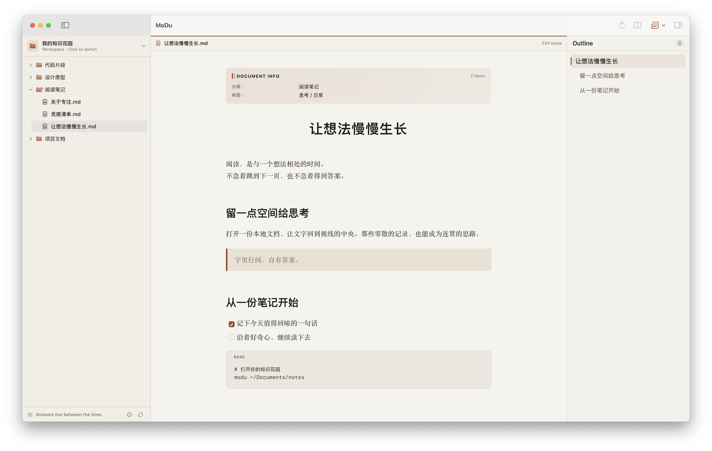
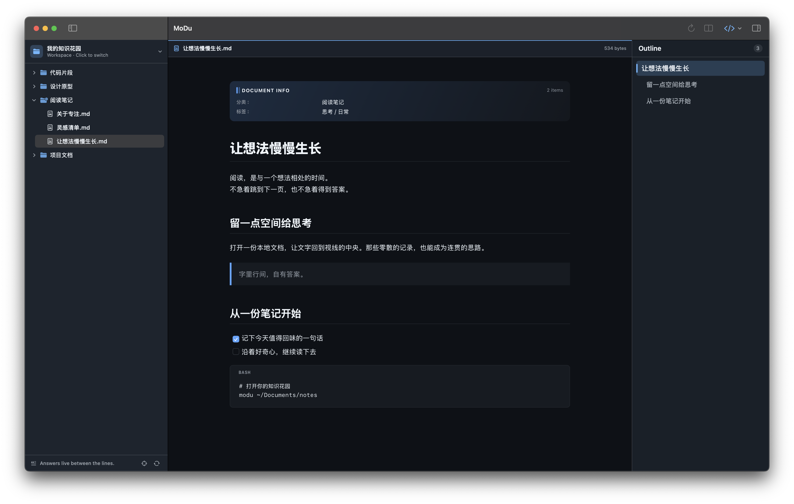

让不同格式，自然展开
Markdown 的排版、图表与表格，HTML 原型的交互，源码的语法高亮。笔记与项目文件，都能直接打开。
Answers live between the lines.

Markdown 的排版、图表与表格，HTML 原型的交互，源码的语法高亮。笔记与项目文件，都能直接打开。
一边看说明，一边读实现。两个阅读栏独立打开文件，拖动分界线调整宽度，思路不用来回切换。
文章大纲随正文滚动。用查找直达关键词，读源码时按行号跳转，从你关心的位置继续。
02 / 阅读的另一面
从纸页的温润，到 GitHub 的清晰。为此刻的阅读，选一个舒服的底色。
还有极简、暖沙、墨夜。
五套主题，均支持跟随系统及明暗外观。

03 / 熟悉的 Mac，熟悉的文件
SwiftUI、AppKit 与系统 WebKit。
不捆绑 Chromium 或 Node，
让阅读融入你熟悉的 Mac。
选择并授权一个本地目录，就能开始阅读。墨读不索引、不主动上传文档。
远程图片与 HTML 声明的网络资源按需加载。
modu .在墨读设置中安装命令行工具，即可打开目录或文档。